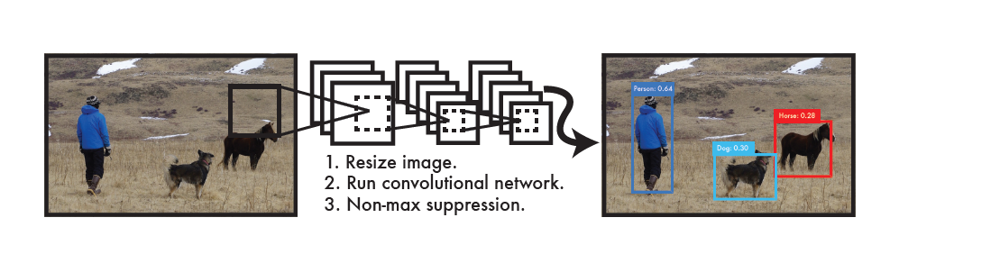
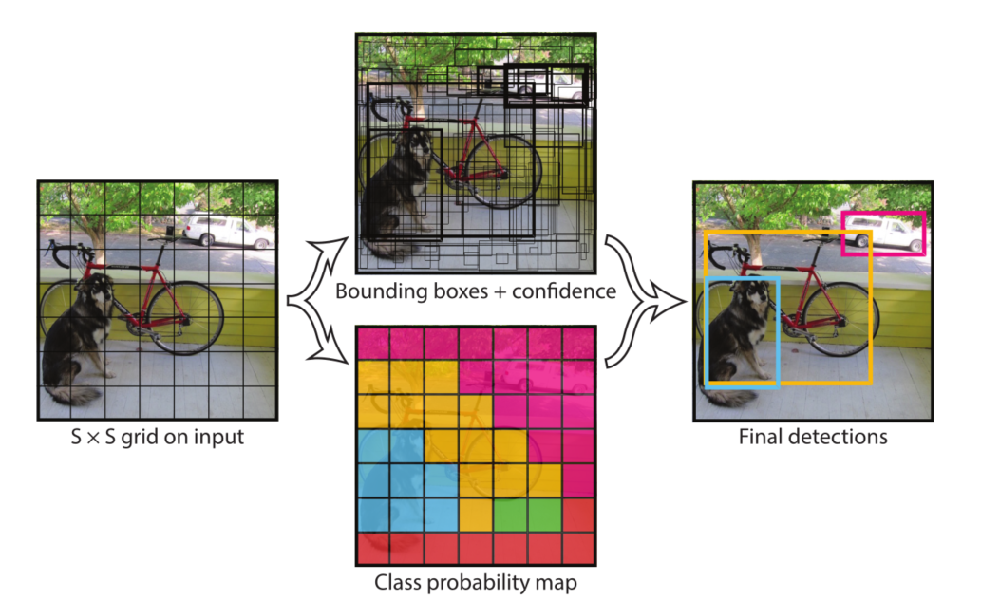
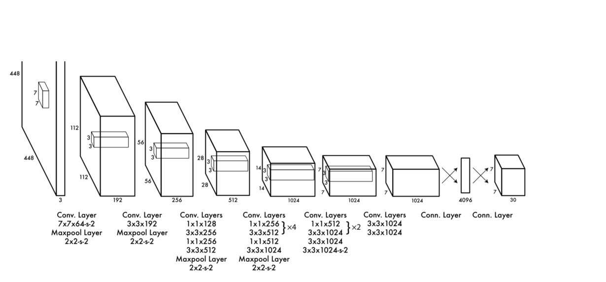
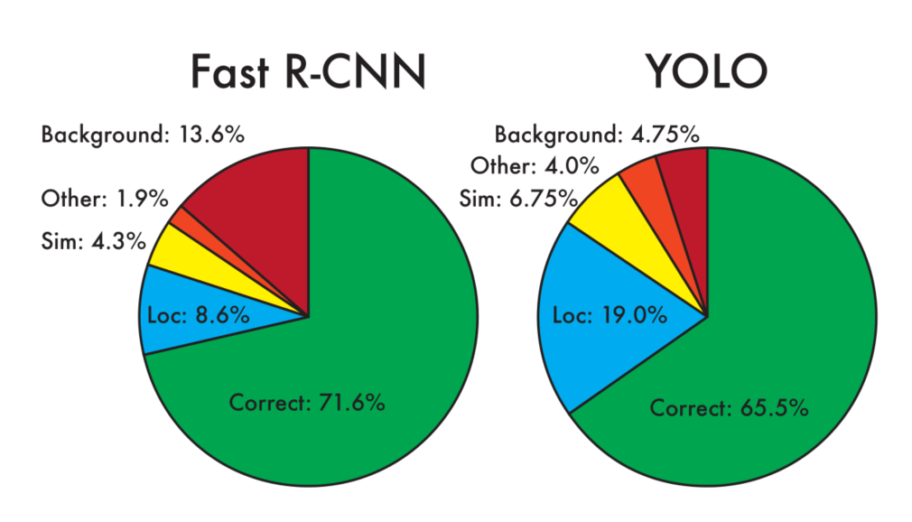
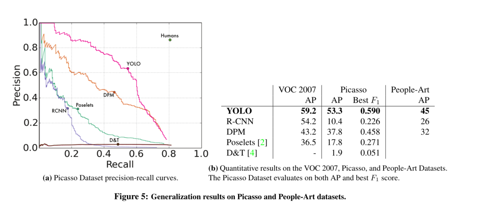
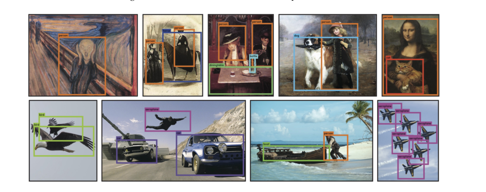

YOLOv1
原文地址: https://arxiv.org/pdf/1506.02640.pdf
摘要
我们提出了一种新的目标检测方法 \(YOLO\) 。以前的目标检测工作重新利用分类器来执行检测。相反，我们将目标检测框架看作从空间分离的边界框和相关类别概率的回归问题。在一次评估中，一个单一的神经网络直接从完整的图像预测边界框和类别概率。由于整个检测管道是一个单一的网络，因此可以直接对检测性能进行端到端(译者注：端对端指的是输入原始数据，输出的是最后结果，应用在特征学习融入算法，无需单独处理)优化。
我们的统一架构非常快。我们的基本 \(YOLO\) 模型以每秒45帧的速度实时处理图像。该网络的一个小版本：\(Fast \ YOLO\) 是\(YOLO\) 的一个较小版本，每秒能达到处理惊人的155帧图像，同时仍然达到其他实时探测器的两倍 \(mAP\) 。与最先进的检测系统相比， \(YOLO\) YOLO虽然存在较多的定位错误，但很少将背景预测成假阳性(译者注：其它先进的目标检测算法将背景预测成目标的概率较大)。最后， \(YOLO\) 能学习到目标的非常通用。无论从自然图像到艺术品等其他领域泛化时，它都优于其他检测方法，比如 \(DPM\) 和 \(R-CNN\) 。
1.介绍
人类瞥一眼图像，就会立即知道图像中的物体是什么，它们在哪里，以及它们是如何相互作用的。人类的视觉系统快速和准确的，使我们能够在几乎没有意识的情况下执行复杂的任务，如驾驶。快速、准确的目标检测算法将允许计算机在没有专用传感器的情况下驾驶汽车，使辅助设备能够向人类用户传送实时场景信息并释放通用、响应灵敏的机器人系统的潜力。快速、准确的物体检测算法将帮助计算机在没有专门传感器的情况下驾驶汽车，辅助设备能够将实时场景信息传达给用户，并显示通用、响应式机器人系统的潜力。
目前的检测系统重复利用分类器来执行检测。为了检测目标，这些系统为该目标提供一个分类器，并在测试图像的不同位置和尺度上对其进行评估。例如像可变形部件模型 \((DPM)\) 这样的系统使用滑动窗口方法，其中分类器在整个图像上均匀间隔的位置运行[10]。

图1: YOLO检测系统。 用YOLO处理图像简单而直接。在我们的系统中:
- 将输入图像的大小调整为448 × 448。
- 在图像上运行一个卷积网络。
- 根据模型的置信度对结果检测进行阈值。
最近的方法，如R-CNN提出使用部分区域，首先在图像中生成潜在的边界框，然后在这些框上运行分类器。完成分类后，通过后处理在细化边界框，消除重复检测，并基于场景中的其他目标重新定位边界框[13]。这些复杂的流程很慢，很难优化，因为每个单独的组件都必须单独训练。
我们将目标检测重新定义为一个单一的回归问题，直接从图像像素到边界框坐标和类别概率。使用我们的系统，您只需要在图像上看一次（you only look once, \(YOLO\) ），就以预测什么目标出现和它们在哪里。
\(YOLO\) 新奇又很简单：如图1所示。单个卷积网络同时预测这些框的多个边界框和类别概率值。YOLO在完整图像上训练，并直接优化检测性能。与传统的目标检测方法相比，这种统一的模型有几个优点。
首先， \(YOLO\) 速度非常快。由于我们将检测视为回归问题，所以我们不需要复杂的流程。测试时我们在一张新图像上简单的运行我们的神经网络来预测检测的结果。在Titan X GPU上没有批处理中，我们的基础网络以每秒45帧的速度运行。快速版本运行速度超过150fps。这意味着我们可以在不到25毫秒的延迟内实时处理流媒体视频。此外， \(YOLO\) 实现了其它实时系统两倍以上的mAP。关于我们的系统在网络摄像头上实时运行的演示，请参阅我们的项目网页：http://pjreddie.com/yolo/。
其次，\(YOLO\) 在进行预测时，会对图像进行全局地推理。与基于滑动窗口(sliding window)和基于区域提议(region proposal)的技术不同，\(YOLO\) 在训练期间和测试时会看到整个图像，因此它隐式地编码关于类及其外观的上下文信息。\(Fast \ R-CNN\) 是一种顶部的检测方法[14]，但因为它看不到更大的上下文，所以在图像中会将背景块误检为目标。与 \(Fast R-CNN\) 相比，YOLO的背景误检数量少了一半。
第三，\(YOLO\) 学习目标可泛化表示。当在自然的图像上进行训练和对艺术作品进行测试时，\(YOLO\) 大幅优于 \(DPM\) 和 \(R-CNN\) 等顶级检测方法。由于\(YOLO\) 具有高度泛化能力，因此在应用于新领域或碰到非正常输入时很少出故障。
\(YOLO\) 在准确度上仍然落后于最先进的检测系统。虽然它可以快速识别图像中的目标，但它很难精确定位一些目标，尤其是一些小目标。我们在实验中进一步研究了这些权衡。
\(YOLO\) 我们所有的训练和测试代码都是开源的。各种预训练模型也都可以下载。
2.统一的检测
我们将目标检测的单独组件集成到单个神经网络中。我们的网络利用整个图像的特征来预测每个边界框。它还可以同时预测一张图像中的所有类别的所有边界框。这意味着我们的网络对整个图像和图像中的所有对象进行全局推理。\(YOLO\) 设计可实现端到端训练和实时的速度，同时保持较高的平均精度(即mAP值)。
我们的系统将输入图像分成 \(S×S\) 的网格。如果一个目标的中心落入一个网格单元中，该网格单元负责检测该目标。
每个网格单元预测 \(B\) 个边界框和置信度分数对于那些框。这些置信度分数反映了该模型对框是否包含目标的置信度，以及它预测框的准确度。在形式上，我们将置信度定义为 \(Pr(Object)∗IOU^{truth}_{pred}\) 。如果该单元格中不存在目标，则置信度分数应为 \(0\)。否则，我们希望置信度分数等于预测框与真实值之间联合部分的交集( \(IOU\) )。
每个边界框包含5个预值： \(x,y,w,h,confidence\) 。\((x,y)\) 坐标表示边界框相对于网格单元边界的方框中心。宽度和高度是相对于整张图像预测的。最后，置信度预测表示为预测框与实际边界框之间的 \(IOU\) 。
每个网格单元还预测 \(C\) 个条件类别概率 \(Pr(Class_i|Object)\)。这些概率以包含目标的网格单元为条件。每个网格单元我们只预测的一组类别概率，而不管边界框的的数量 \(B\) 是多少。
在测试时，我们将条件类概率和单个框的置信度预测值相乘：
\(\small{Pr(Class_i|Object) ∗ Pr(Object) ∗ IOU^{truth}_{pred} = Pr(Class_i) ∗ IOU^{truth}_{pred}}\) (1)
它为我们提供了每个框特定类别的置信度分数。这些分数编码了该类出现在框中的概率以及预测框拟合目标的程度。

我们的系统将检测建模为一个回归问题。它将图像划分为一个 \(S × S\) 网格，并对每个网格单元预测 \(B\) 个边界框、这些框的置信度 和 \(C\) 类别概率。这些预测被编码为 \(S × S × (B * 5 + C)\) 的张量
- \(S\times{S}\) grid on input( \(S\times{S}\) 的网格在输入上)
- Bounding boxes (边界框)
- confidence (置信度)
- Class probability map(类别概率地图)
- Final detections (最终的检测结果)
为了在 \(Pascal \ VOC\) 上评估 \(YOLO\) ，我们使用 \(S=7，B=2。Pascal VOC\) 有 \(20\) 个标注类，所以 \(C=20\) 。我们最终的预测是 \(7×7×30\) 的张量。
- 注意：
1.由于输出层为全连接层，因此在检测时，YOLO训练模型只支持与训练图像相同的输入分辨率。
2.虽然每个格子可以预测B个bounding box，但是最终只选择只选择IOU最高的bounding box作为物体检测输出，即每个格子最多只预测出一个物体。当物体占画面比例较小，如图像中包含畜群或鸟群时，每个格子包含多个物体，但却只能检测出其中一个。这是YOLO方法的一个缺陷。
2.1 网络设计
我们将该模型实现为卷积神经网络，并在 \(PASCAL \ VOC\) 检测数据集[9]上对其进行评估。网络的初始卷积层从图像中提取特征，而全连通层预测输出概率和坐标。
我们的网络架构的灵感来自于用于图像分类[34]的 \(GoogLeNet\) 模型。我们的网络有 \(24\) 个卷积层和 \(2\) 个完全连接层。简单地使用 \(1 × 1\) 还原层和 \(3 × 3\) 卷积层，类似 \(Lin\)等[22]。完整的网络 \(如图3\) 所示。

我们的检测网络有 \(24\) 个卷积层和 \(2\) 个完全连接层。交替的 \(1 × 1\) 卷积层减少了前一层的特征空间。我们在 \(ImageNet\) 分类任务上以一半分辨率( \(224 × 224\) 输入图像)对卷积层进行预训练，然后将分辨率提高一倍用于检测。
我们还训练了一个快速版本的 \(YOLO\) ，旨在推动快速目标检测的边界。\(Fast \ YOLO\) 使用的神经网络具有更少的卷积层(9层而不是24层)，这些层中的过滤器也更少。除了网络的规模，\(YOLO\) 和 \(Fast \ YOLO\) 之间的所有训练和测试参数都是相同的。
我们的网络的最终输出是 \(7 × 7 × 30\) 张量的预测。
2.2 训练
预训练分类网络：我们在ImageNet 1000类竞赛数据集[30]上预训练卷积层。对于预训练，我们使用图3中的前20个卷积层，然后是平均池化层和完全连接层。我们对该网络进行了大约一周的训练，并在ImageNet 2012验证集上实现了88%的单一作物前5名的准确性，与Caffe的Model Zoo[24]中的GoogLeNet模型相当。我们使用Darknet框架进行所有的训练和推理[26]。
然后我们将模型转换为执行检测。Ren等人表明，在预训练的网络中同时添加卷积层和连接层可以提高性能[29]。 按照他们的例子，我们添加了四个卷积层和两个具有随机初始化权值的完全连接层。检测通常需要细粒度的视觉信息，因此我们将网络的输入分辨率从 \(224 × 224\) 提高到 \(448 × 448\) 。
我们的最后一层预测类别概率和边界框坐标。我们通过图像宽度和高度来归一化边界框的宽度和高度，使它们落在0和1之间。我们将边界框x和y坐标参数化为特定网格单元位置的偏移量，因此它们边界也在0和1之间。 我们对最后一层使用线性激活函数，所有其它层使用下面的leaky ReLU激活函数:
\(\phi(x)=\left\{\begin{array}{ll} x, & \text { if } x>0 \\ 0.1 x, & \text { otherwise } \end{array}\right.\) (2)
我们优化了模型输出的平方和误差。我们使用平方和误差是因为它很容易进行优化，但是它并不完全符合我们最大化平均精度的目标。分类误差与定位误差的权重是一样的，这可能并不理想。另外，在每张图像中，许多网格单元不包含任何对象。这将导致这些单元格的 \("置信度"\) 分数为零，通常压倒了包含目标的单元格的梯度。这可能导致模型不稳定，从而导致训练过早发散。
为了解决这个问题，我们增加了边界框坐标预测的损失，减少了不包含目标的框的置信度预测的损失。我们使用两个参数，\(\lambda_{coord}\) 和 \(\lambda{noobj}\) 来完成这个任务。我们设置 \(\lambda_{coord} = 5\) , \(\lambda_{noobj} = 0.5\) 。
平方和误差在大方框和小方框中的权重相同。我们的误差度量应该反映大方框里的小偏差比小方框里的影响小。为了部分解决这个问题，我们预测边界框宽度和高度的平方根，而不是直接预测宽度和高度。为了缓和这个问题，作者提出预测边界框宽度和高度的平方根，而不是直接预测宽度和高度。
\(YOLO\)每个网格单元有预测多个边界框。在训练时，每个目标我们只需要一个边界框预测器来负责。我们根据哪个预测器的预测值与真实值之间具有当前最高的 \(IOU\) 来指定哪个预测器负责预测该目标。这导致边界框预测器之间的专一化。每个预测器可以更好地预测特定大小、长宽比或目标的类别，从而改善整体召回率。
在训练期间，我们优化以下由多部分组成的损失函数：
\(\begin{array}{c} \lambda_{\text {coord }} \sum_{i=0}^{S^{2}} \sum_{j=0}^{B} \mathbb{1}_{i j}^{\text {obj }}\left[\left(x_{i}-\hat{x}_{i}\right)^{2}+\left(y_{i}-\hat{y}_{i}\right)^{2}\right] \\ +\lambda_{\text {coord }} \sum_{i=0}^{S^{2}} \sum_{j=0}^{B} \mathbb{1}_{i j}^{\text {obj }}\left[\left(\sqrt{w_{i}}-\sqrt{\hat{w}_{i}}\right)^{2}+\left(\sqrt{h_{i}}-\sqrt{\hat{h}_{i}}\right)^{2}\right] \\ +\sum_{i=0}^{S^{2}} \sum_{j=0}^{B} \mathbb{1}_{i j}^{\text {obj }}\left(C_{i}-\hat{C}_{i}\right)^{2} \\ +\lambda_{\text {noobj }} \sum_{i=0}^{S^{2}} \sum_{j=0}^{B} \mathbb{1}_{i j}^{\text {noobj }}\left(C_{i}-\hat{C}_{i}\right)^{2} \\ +\sum_{i=0}^{S^{2}} \mathbb{1}_{i}^{\text {obj }} \sum_{c \in \text { classes }}\left(p_{i}(c)-\hat{p}_{i}(c)\right)^{2} \end{array}\) (3)
其中 \(\mathbb{1}_{i}^{\mathrm{obj}}\) 表示如果目标出现在单元格 \(i\) 并且 \(\mathbb{1}_{i j}^{\mathrm{obj}}\) 表示第 \(j\) 个边界框负责在单元格 \(i\) 预测 。
注意，如果目标存在于该网格单元中（前面讨论的条件类别概率），则损失函数惩罚分类误差。如果预测器 \("负责"\) 真实边界框（即该网格单元中具有最高 \(IOU\) 的预测器），则它也仅惩罚边界框坐标误差。 我们在 \(Pascal \ VOC \ 2007\) 和 \(2012\) 的训练和验证数据集上进行了大约 \(135\) 个迭代周期的网络训练。 在 \(Pascal \ VOC \ 2012\) 上进行测试时，我们的训练还包含了\(P0ascal \ VOC \ 2007\) 的测试数据。在整个训练过程中，我们使用了batch-size = 64 (批大小)，momentum = 0.9 (动量)和 decay = 0.0005 (衰减率)。
我们的学习率方案如下：对于第一个迭代周期，我们慢慢地将学习率从 \(10^{-3}\) 提高到 \(10^{-2}\)。如果我们从高学习率开始，我们的模型往往会由于梯度不稳定而发散。我们继续以 \(10^{-2}\) 的学习率训练 \(75\) 个 epochs(即迭代周期)，然后用 \(10^{-3}\) 的学习率训练 \(30\) 个epochs，最后用 \(10^{-4}\) 的学习率训练 30个epochs。
为了避免过度拟合，我们使用 \(dropout\) 和 广泛的数据增强。在第一个连接层之后我们丢弃具有速率=0.5的层，防止层之间的（相互影响）。对于数据增强，我们引入随机缩放和最多原始图像大小的20%的translations。我们还随机调整曝光和饱和度的图像多达1.5倍的HSV颜色空间。
在第一个连接层之后，\(dropout\) 层使用rate=0.5的比例，防止层之间的相互影响(co-adaptation)[18]。对于数据增强，我们引入高达原始图像20%大小的随机缩放和转换。我们还在HSV色彩空间中使用高达1.5的因子来随机调整图像的曝光和饱和度。
2.3 推理
与训练时一样，预测测试图像的检测只需要一次网络评估。在 \(Pascal \ VOC\) 上，每张图像上网络预测98个边界框（译者注：每张图像被划分成77的格子，每个格子预测两个边界框，总共98个边界框*）和每个框的类别概率。与基于分类器的方法不同，\(YOLO\) 在测试时非常快，因为它只需要运行一次网络评估。
网格设计加强了边界框预测的空间多样性。通常情况下，一个目标落在哪个网格单元格中是很清楚的，网络预测的每个目标对应一个框。一些大的目标或靠近多个网格单元边界的目标可以被多个网格单元很好地定位。非极大值抑制（即NMS）可以用来修正这些多重检测。虽然不像 \(R-CNN\) 或 \(DPM\) 那样对性能至关重要，但非最大抑制增加了2~3%的 \(mAP\)。
2.4 YOLO的局限性
YOLO对边界框预测施加了很强的空间约束，因为每个网格单元格只能预测两个框，并且只能有一个类。这种空间约束限制了我们的模型可以预测的附近物体的数量。我们的模型很难处理成群出现的小物体，比如鸟群。
由于我们的模型学习从数据中预测边界框，因此它很难泛化到新的、不常见的长宽比或配置中的目标。我们的模型也使用相对较粗糙的特征来预测边界框，因为我们的架构具有来自输入图像的多个下采样层。
最后，当我们训练一个近似检测性能的损失函数时，我们的损失函数对待小边界框与大边界框的会有同样的误差。大边界框的小误差通常是良性的，但小边界框的小误差对 \(IOU\) 的影响要大得多。我们的主要误差来源是定位误差。
3. 与其他检测系统的比较
目标检测是计算机视觉中的核心问题。检测流程通常从输入图像上提取一组健壮的特征（ \(Haar\) [25]，\(SIFT\) [23]，\(HOG\) [4]，卷积特征[6]）开始。然后，分类器[36,21,13,10]或定位器[1,32]被用来识别特征空间中的目标。 这些分类器或定位器以滑动窗口的方式在整个图像上运行,或者在图像中的一些区域的子集[35,15,39]上。 我们将 \(YOLO\) 检测系统与几种顶级检测框架进行比较，以突出了主要的相似性和差异性。
可变形零件模型（Deformable parts models）。可变形零件模型（ \(DPM\) ）使用滑动窗口方法进行目标检测[10]。DPM使用不相交的流程来提取静态特征，对区域进行分类，预测高评分区域的边界框等。我们的系统用单个卷积神经网络替换所有这些不同的部分。网络同时进行特征提取、边界框预测、非极大值抑制和上下文推理。网络内嵌训练特征而不是静态特征，并优化它们完成检测任务。我们的统一架构获得了比DPM更快、更准确的模型。
\(R-CNN\) 及其变种使用 \(region \ proposals\) 而不是滑动窗口来查找图像中的目标。Selective Search[35]产生潜在的边界框、卷积网络提取特征、\(SVM\) 对边界框进行评分、线性模型调整边界框、非极大值抑制消除重复检测。这个复杂流程的每个阶段都必须独立地进行精确调整，所得到的系统非常慢，测试时每张图像需要超过40秒[14]。\(YOLO\) 与 $R-CNN $ 有一些相似之处。每个网格单元提出潜在的边界框并使用卷积特征对这些框进行评分。但是我们的系统对网格单元提出进行了空间限制，这有助于缓解对同一目标的多次检测。我们的系统还提出了更少的边界框，每张图像只有 \(98\) 个，而 \(Selective Search\) 则需要 \(2000\) 个左右。最后，我们的系统将这些单独的组件组合成一个单一的、共同优化的模型。
其它快速检测器(Other Fast Detectors)。\(Fast\) 和 \(Faster \ R-CNN\) 通过共享计算和使用神经网络替代 \(Selective \ Search\) 来提出区域加速 \(R-CNN\) 框架[14][28]。虽然它们提供了比 \(R-CNN\) 更快的速度和更高的准确度，但两者仍然不能达到实时性能。
许多研究工作集中在加快 \(DPM\) 流程上[31][38][5]。它们加速 \(HOG\) 计算，使用级联，并将计算推动到 \(GPU\) 上。但是，实际上 \(DPM\) [31]实时运行只达到 \(30Hz\) 。
\(YOLO\) 不是试图优化大型检测流程的单个组件，而是完全抛弃流程，为提升检测速度而重新设计。
像人脸或行人等单类别的检测器可以被高度优化，因为他们只需处理更少的多样性[37]。\(YOLO\) 是一种通用的检测器，可以学习同时检测各种目标。
Deep MultiBox:与R-CNN不同，Szegedy等人训练了一个卷积神经网络来预测感兴趣区域（ROI）[8]，而不是使用 \(Selective \ Search\) 。MultiBox还可以通过用单类别预测替换置信度预测来执行单目标检测。然而，\(MultiBox\) 无法执行通用的目标检测，并且仍然只是一个较大的检测流程中的一部分，需要进一步的对图像块进行分类。\(YOLO\) 和 \(MultiBox\) 都使用卷积网络来预测图像中的边界框，但是 \(YOLO\) 是一个完整的检测系统。
\(OverFeat\):Sermanet等人训练了一个卷积神经网络来完成定位工作，并使该定位器进行检测[32]。\(OverFeat\) 可以高效地执行滑动窗口检测，但它仍然是一个不连贯的系统。\(OverFeat\) 优化了定位，而不是检测性能。像 \(DPM\) 一样，定位器在进行预测时只能看到局部信息。\(OverFeat\) 不能推理全局上下文，因此需要大量的后处理来产生一致的检测。
\(MultiGrasp\) : 我们的工作在设计上类似于 \(Redmon\) 等[27]的 \(grasp\) 检测。我们对边界框预测的网格方法是基于 \(MultiGrasp\) 系统对于 \(grasp检测\) 的回归分析。然而，\(grasp\) 检测比目标检测任务要简单得多。\(MultiGrasp\) 只需要为包含一个目标的图像预测一个可以 \(grasp\) 的区域(即适合抓取的区域)。不必估计目标的大小、位置或目标边界或预测目标的类别，只需要找到适合抓取的区域。\(YOLO\) 可以预测图像中多个类别的多个目标的边界框和类别概率。
4. 测试实验
首先，我们在 \(PASCAL \ VOC \ 2007\) 上比较了 \(YOLO\) 和其它的实时检测系统。为了理解 \(YOLO\) 和 \(R-CNN\) 变种之间的差异，我们探索了 \(YOLO\) 和 \(R-CNN\) 性能最高的版本之一 \(Fast\ R-CNN\) [14]在 \(VOC \ 2007\) 上错误率。根据不同的误差曲线，我们的研究显示 \(YOLO\) 可以用来重新评估 \(Fast \ R-CNN\) 检测，并减少背景假阳性带来的误差，从而显著提升性能。我们还展示了在 \(VOC \ 2012\) 上的结果，并与目前最先进的方法比较了 \(mAP\)。最后，在两个艺术品数据集上证明了我们 \(YOLO\) 比其他检测器更能泛化到新的领域。
4.1 与其他实时系统的比较
目标检测方面的许多研究工作都集中在对标准检测流程[5]，[38]，[31]，[14]，[17]，[28]提升速度上。然而，只有Sadeghi等真正研究出了一个实时运行的检测系统（每秒30帧或更好）[31]。我们将YOLO与他们DPM的GPU实现进行了比较，其在30Hz或100Hz下运行。虽然其它的研究工作没有达到实时检测的标准，我们也比较了它们的相对mAP和速度来检查目标检测系统中精度—性能之间的权衡。
\(Fast \ YOLO\) 是 \(PASCAL\) 上最快的目标检测方法;据我们所知，这是现存速度最快的物体探测器。 \(mAP\) 的准确率为 \(52.7%\) ，是之前实时检测工作的两倍多。\(YOLO\) 将 \(mAP\) 推至 \(63.4%\) ，同时仍保持实时性能。
我们也使用 \(VGG-16\) 训练了 \(YOLO\) 。（译者注：YOLO使用了作者自己开发的DarkNet模型为baseline）这个模型比 \(YOLO\) 更准确，但速度慢得多。这个模型可以用来与依赖于 \(VGG-16\) 的其它检测系统作比较，但由于它比实时的 \(YOLO\) 更慢，本文的其余部分主要关注我们更快的模型。
\(Fastest \ DPM\) 可以在不牺牲太多 \(mAP\) 的情况下有效地加速 \(DPM\) ，但它仍然会将实时性能降低2倍[38]。与神经网络方法相比， \(DPM\) 相对较低的检测精度也是其限制。
\(\begin{array}{lrrr} \text { Real-Time Detectors } & \text { Train } & \text { mAP } & \text { FPS } \\ \hline \text { 100Hz DPM [31] } & 2007 & 16.0 & 100 \\ \text { 30Hz DPM [31] } & 2007 & 26.1 & 30 \\ \text { Fast YOLO } & 2007+2012 & 52.7 & \mathbf{1 5 5} \\ \text { YOLO } & 2007+2012 & \mathbf{6 3 . 4} & 45 \\ \hline \hline \text { Less Than Real-Time } & & & \\ \hline \text { Fastest DPM [38] } & 2007 & 30.4 & 15 \\ \text { R-CNN Minus R [20] } & 2007 & 53.5 & 6 \\ \text { Fast R-CNN [14] } & 2007+2012 & 70.0 & 0.5 \\ \text { Faster R-CNN VGG-16[28] } & 2007+2012 & 73.2 & 7 \\ \text { Faster R-CNN ZF [28] } & 2007+2012 & 62.1 & 18 \\ \text { YOLO VGG-16 } & 2007+2012 & 66.4 & 21 \end{array}\)
比较快速探测器的性能和速度。\(Fast \ YOLO\) 是 \(PASCAL \ VOC\) 检测记录中最快的检测器，准确性仍然是任何其他实时检测器的两倍。 \(YOLO\) 比快速版本更精确 \(10mAP\) ，同时实时速度远远高于其他检测器。
\(R-CNN \ minnus \ R\) 将选择性搜索替换为静态边界框proposals [20]。虽然速度比R-CNN更快，但仍然达不到实时，并且由于没有好的边界框proposals，准确性受到了严重影响。
\(Fast \ R-CNN\) 加快了 \(R-CNN\) 的分类阶段，但是仍然依赖selective search，每张图像需要花费大约2秒来生成边界框proposals。因此，它具有很高的mAP，但是0.5 fps的速度仍离实时性很远。
最近 \(Faster \ R-CNN\) 用神经网络替代了selective search来提出边界框，类似于Szegedy等[8]。在我们的测试中，他们最精确的模型达到了7fps，而较小的、不太精确的模型运行速度达到18fps。\(VGG-16\) 版本的 \(Faster \ R-CNN\) 要高出 \(10mAP\) ，但速度比 \(YOLO\) 慢 \(6\) 倍。ZeilerFergus的 \(Faster \ R-CNN\) 只比 \(YOLO\) 慢了2.5倍，但也不太准确。
4.2 在VOC 2007上的误差分析
为了进一步检查 \(YOLO\) 和最先进的检测器之间的差异，我们详细分析了 \(VOC \ 2007\) 的结果。我们将 \(YOLO\) 与 \(Fast \ R-CNN\) 进行比较，因为 \(Fast \ R-CNN\) 是 \(PASCAL\) 上性能最高的检测器之一并且它的检测代码是可公开得到的。
我们使用Hoiem等人[19]的方法和工具。对于测试时的每个类别，我们只关注这个类别的前N个预测。每个预测要么归为正确，要么根据错误类型进行归类：
-
Correct：分类正确且 \(IOU >0.5\)。
-
Localization：分类正确但 \(0.1<IOU<0.5\)。
-
Similar：分类的类别相似且 \(IOU>0.1\)。
-
Other：类别错误，\(IOU>0.1\)。
-
Background：分类为其它任何目标，\(IOU<0.1\)。

图4：错误分析: \(Fast \ R-CNN\) vs. \(YOLO\) 这些图表显示了各种类别的前N个检测中定位和背景错误的百分比(N = #该类别中的目标数)
\(YOLO\) 很难正确正确定位目标。定位误差比其它误差错误来源总合都多。\(Fast \ R-CNN\) 定位误差少很多，但背景误差更多。它的检测结果中 \(13.6%\) 是不包含任何目标的假阳性。\(Fast \ R-CNN\) 与 \(YOLO\) 相比，将背景预测成目标的可能性高出近3倍。（译者注：根据图4，13.6/4.75=2.86）
4.3 结合 \(Fast \ R-CNN\) 和 \(YOLO\)
\(YOLO\) 比 \(Fast \ R-CNN\) 的背景误检要少得多。通过使用 \(YOLO\) 消除 \(Fast \ R-CNN\) 的背景检测，我们获得了显著的性能提升。对于 \(RCNN\) 预测的每个边界框，我们检查 \(YOLO\) 是否预测了一个类似的框。如果是这样，我们根据 \(YOLO\) 预测的概率和两个盒子之间的重叠来对这个预测进行改进。
最好的 \(Fast \ R-CNN\) 模型在 \(VOC \ 2007\) 测试集上达到了 71.8%的\(mAP\) 。当与 \(YOLO\) 结合时，其 \(mAP\) 增加了 3.2% 达到了 75.0% 。我们也尝试将最好的 \(Fast \ R-CNN\) 模型与其它几个版本的 \(Fast \ R-CNN\) 结合起来。这些模型组合产生了0.3-0.6%的小幅增加，详见表2。
\(\begin{array}{lrrr} & \text { mAP } & \text { Combined } & \text { Gain } \\ \hline \text { Fast R-CNN } & 71.8 & - & - \\ \hline \text { Fast R-CNN (2007 data) } & \mathbf{6 6 . 9} & 72.4 & .6 \\ \text { Fast R-CNN (VGG-M) } & 59.2 & 72.4 & .6 \\ \text { Fast R-CNN (CaffeNet) } & 57.1 & 72.1 & .3 \\ \text { YOLO } & 63.4 & \mathbf{7 5 . 0} & \mathbf{3 . 2} \end{array}\)
表2:VOC 2007的模型组合试验。我们用 \(Fast \ R-CNN\) 的最佳版本来检验各种模型的组合效果。\(Fast \ R-CNN\) 的其他版本只改善了很小的性能，而 \(YOLO\) 提供了显著的性能提升。

表3:PASCAL VOC 2012排行榜。2015年11月6日，YOLO与完整comp4(允许外部数据)公开排行榜的对比。\(mAP\) 和 每个类AP 都显示在各种检测方法。\(YOLO\) 是唯一的实时检测器。\(Fast \ R-CNN + YOLO\) 是第四高的得分方法，比 \(Fast \ R-CNN\) 提高了2.3%的 \(mAP\)。
来自YOLO的提升不仅仅是模型集成的副产品，因为组合不同版本的Fast R-CNN几乎没有什么改进。相反，正是因为 \(YOLO\) 在测试时出现了各种各样的误差，所以在提高 \(Fast \ R-CNN\) 的性能方面非常有效。
遗憾的是，这个组合并没有从 \(YOLO\) 的速度中受益，因为我们分别运行每个模型，然后将结果组合起来。但是，由于 \(YOLO\) 速度如此之快，与 \(Fast \ R-CNN\) 相比，不会显著的增加任何计算时间。
4.4 VOC 2012条结果
在 \(VOC \ 2012\) 测试集上，\(YOLO\) 获得了57.9% 的 \(mAP\) 。这低于现有的最好技术，如表3所示其接近于使用VGG-16的原始R-CNN。我们的系统与其最接近的竞争对手相比，需要改善在小目标上的检测。在水瓶、绵羊和电视/显示器等类别上，YOLO的得分比R-CNN或Feature Edit低8−10%。然而，在猫和火车等其它类别上YOLO实现了更高的性能。
我们联合的 \(Fast \ R-CNN+YOLO\) 模型是性能最高的检测方法之一。\(Fast \ R-CNN\) 和 \(YOLO\) 的组合中获得了2.3%的提高，在公开排行榜上提升了5个名次。
4.5 泛化能力：艺术品中的人物检测
用于目标检测的学术数据集以相同分布获取训练和测试数据。在现实世界的应用中，很难预测所有可能的样本，而且测试数据可能与系统之前看到的不同[3]。(因为测试数据与模型训练的数据可能在风格、模式、目标表现形式等方面有很大的区别，例如模型训练时的数据是用相机拍摄的图像，而测试时用油画作品图像，此时由于油画作品比较抽象，模型就可能无法很好地识别其中的目标) 我们在 \(Picasso\) 数据集上[12]和 \(People-Art\) 数据集[3]上将 \(YOLO\) 与其它的检测系统进行比较，两个数据集用于艺术品上的人物检测。
图5所示为 \(YOLO\) 和其它检测方法之间性能比较的结果。作为参考，我们在person上提供 \(VOC \ 2007\) 的检测 \(AP\) ，其中所有模型仅在 \(VOC \ 2007\) 数据上训练。在Picasso数据集上测试的模型使用 \(VOC \ 2012\) 进行了训练，而 \(People-Art\) 数据集测试的模型使用 \(VOC \ 2010\) 进行了训练。
\(R-CNN\) 在 \(VOC \ 2007\) 上的 \(AP\) 很高。但是应用到艺术品上精度下降了很多。\(R-CNN\) 使用Selective Search来生成候选边界框，现在换为自然图片。在分类时只能看到图片的一个小区域，需要质量很高的候选才可以。
\(DPM\) 应用到艺术品上后 \(AP\) 还保持的不错。之前的工作理论 \(DPM\) 表现不错的原因是它对于物体的形状和布局有很强的空间模型。虽然 \(DPM\) 没有像 \(R-CNN\) 那样精度下降很多，但是它的 \(AP\) 本来就比较低。
\(YOLO\) 在 \(VOC \ 2007\) 上的表现不错，当应用到艺术品上时比其他模型精度下降的少。与 \(DPM\) 类似，\(YOLO\) 对物体的大小和形状进行建模，还有物体和物体通常出现的位置之间的关系。艺术品和自然图片在像素级别上差异很大，但是物体的大小和形状是类似的，因此 \(YOLO\) 仍然可以很好的预测边界框和检测物体。

图5：Picasso 和 People-Art 数据集综合的结果。
- (a): 在Picasso数据集上的PR曲线。
- (b): 在 VOC 2007, Picasso, 和 People-Art 的结果数据。Picasso 数据集评估AP和最佳 \(F_1\)分数。

图6：检测的结果。\(YOLO\) 运行的样本艺术作品 和 来自互联网的自然图像。虽然它确实认为一个人是一架飞机，但它基本上是准确的。
5.野外实时检测
\(YOLO\) 是一种快速、精确的目标检测器，非常适合计算机视觉应用。我们将 \(YOLO\) 连接到网络摄像头，并验证它是否能保持实时性能，包括从摄像头获取图像并显示检测结果的时间。
最终的系统是交互式的并且是参与式的。虽然 \(YOLO\) 单独地处理图像，但当连接到网络摄像头时，其功能类似于跟踪系统，可在目标移动和外观变化时检测目标。系统演示和源代码可以在我们的项目网站上找到：http://pjreddie.com/yolo/。
6.总结
我们介绍了 \(YOLO\) ，一种统一的目标检测模型。我们的模型构建简单，可以直接在整张图像上进行训练。与基于分类器的方法不同， \(YOLO\) 直接在对应检测性能的损失函数上训练，并且整个模型统一训练。
\(Fast \ YOLO\) 是文献中最快的通用目的的目标检测器， \(YOLO\) 推动了实时目标检测的最新技术。 \(YOLO\) 还很好地泛化到新领域，使其成为要求快速、强大目标检测应用的理想选择。
Acknowledgements: This work is partially supported by ONR N00014-13-1-0720, NSF IIS-1338054, and The Allen Distinguished Investigator Award.
References
- [1] M. B. Blaschko and C. H. Lampert. Learning to localize objects with structured output regression. In Computer Vision–ECCV 2008, pages 2–15. Springer, 2008. 4
- [2] L. Bourdev and J. Malik. Poselets: Body part detectors trained using 3d human pose annotations. In International Conference on Computer Vision (ICCV), 2009. 8
- [3] H. Cai, Q. Wu, T. Corradi, and P. Hall. The cross-depiction problem: Computer vision algorithms for recognising objects in artwork and in photographs. arXiv preprint arXiv:1505.00110, 2015. 7
- [4] N. Dalal and B. Triggs. Histograms of oriented gradients for human detection. In Computer Vision and Pattern Recognition, 2005. CVPR 2005. IEEE Computer Society Conferenceon, volume 1, pages 886–893. IEEE, 2005. 4, 8
- [5] T. Dean, M. Ruzon, M. Segal, J. Shlens, S. Vijayanarasimhan, J. Yagnik, et al. Fast, accurate detection of 100,000 object classes on a single machine. In Computer Vision and Pattern Recognition (CVPR), 2013 IEEE Conference on, pages 1814–1821. IEEE, 2013. 5
- [6] J. Donahue, Y. Jia, O. Vinyals, J. Hoffman, N. Zhang, E. Tzeng, and T. Darrell. Decaf: A deep convolutional activation feature for generic visual recognition. arXiv preprint arXiv:1310.1531, 2013. 4
- [7] J. Dong, Q. Chen, S. Yan, and A. Yuille. Towards unified object detection and semantic segmentation. In Computer Vision–ECCV 2014, pages 299–314. Springer, 2014. 7
- [8] D. Erhan, C. Szegedy, A. Toshev, and D. Anguelov. Scalable object detection using deep neural networks. In Computer Vision and Pattern Recognition (CVPR), 2014 IEEE Conference on, pages 2155–2162. IEEE, 2014. 5, 6
- [9] M. Everingham, S. M. A. Eslami, L. Van Gool, C. K. I. Williams, J. Winn, and A. Zisserman. The pascal visual object classes challenge: A retrospective. International Journal of Computer Vision, 111(1):98–136, Jan. 2015. 2
- [10] P. F. Felzenszwalb, R. B. Girshick, D. McAllester, and D. Ramanan. Object detection with discriminatively trained part based models. IEEE Transactions on Pattern Analysis and Machine Intelligence, 32(9):1627–1645, 2010. 1, 4
- [11] S. Gidaris and N. Komodakis. Object detection via a multiregion & semantic segmentation-aware CNN model. CoRR, abs/1505.01749, 2015. 7
- [12] S. Ginosar, D. Haas, T. Brown, and J. Malik. Detecting people in cubist art. In Computer Vision-ECCV 2014 Workshops, pages 101–116. Springer, 2014. 7
- [13] R. Girshick, J. Donahue, T. Darrell, and J. Malik. Rich feature hierarchies for accurate object detection and semantic segmentation. In Computer Vision and Pattern Recognition (CVPR), 2014 IEEE Conference on, pages 580–587. IEEE, 2014. 1, 4, 7
- [14] R. B. Girshick. Fast R-CNN. CoRR, abs/1504.08083, 2015. 2, 5, 6, 7
- [15] S. Gould, T. Gao, and D. Koller. Region-based segmentation and object detection. In Advances in neural information processing systems, pages 655–663, 2009. 4
- [16] B. Hariharan, P. Arbeláez, R. Girshick, and J. Malik. Simultaneous detection and segmentation. In Computer Vision–ECCV 2014, pages 297–312. Springer, 2014. 7
- [17] K. He, X. Zhang, S. Ren, and J. Sun. Spatial pyramid pooling in deep convolutional networks for visual recognition. arXiv preprint arXiv:1406.4729, 2014. 5
- [18] G. E. Hinton, N. Srivastava, A. Krizhevsky, I. Sutskever, and R. R. Salakhutdinov. Improving neural networks by preventing co-adaptation of feature detectors. arXiv preprint arXiv:1207.0580, 2012. 4
- [19] D. Hoiem, Y. Chodpathumwan, and Q. Dai. Diagnosing error in object detectors. In Computer Vision–ECCV 2012, pages 340–353. Springer, 2012. 6
- [20] K. Lenc and A. Vedaldi. R-cnn minus r. arXiv preprint arXiv:1506.06981, 2015. 5, 6
- [21] R. Lienhart and J. Maydt. An extended set of haar-like features for rapid object detection. In Image Processing. 2002. Proceedings. 2002 International Conference on, volume 1, pages I–900. IEEE, 2002. 4
- [22] M. Lin, Q. Chen, and S. Yan. Network in network. CoRR, abs/1312.4400, 2013. 2
- [23] D. G. Lowe. Object recognition from local scale-invariant features. In Computer vision, 1999. The proceedings of the seventh IEEE international conference on, volume 2, pages 1150–1157. Ieee, 1999. 4
- [24] D. Mishkin. Models accuracy on imagenet 2012 val. https://github.com/BVLC/caffe/wiki/Models-accuracy-on-ImageNet-2012-val. Ac-cessed: 2015-10-2. 3
- [25] C. P. Papageorgiou, M. Oren, and T. Poggio. A general framework for object detection. In Computer vision, 1998. sixth international conference on, pages 555–562. IEEE,1998. 4
- [26] J. Redmon. Darknet: Open source neural networks in c. http://pjreddie.com/darknet/, 2013–2016. 3
- [27] J. Redmon and A. Angelova. Real-time grasp detection using convolutional neural networks. CoRR, abs/1412.3128, 2014.5
- [28] S. Ren, K. He, R. Girshick, and J. Sun. Faster r-cnn: Towards real-time object detection with region proposal networks. arXiv preprint arXiv:1506.01497, 2015. 5, 6, 7
- [29] S. Ren, K. He, R. B. Girshick, X. Zhang, and J. Sun. Object detection networks on convolutional feature maps. CoRR, abs/1504.06066, 2015. 3, 7
- [30] O. Russakovsky, J. Deng, H. Su, J. Krause, S. Satheesh, S. Ma, Z. Huang, A. Karpathy, A. Khosla, M. Bernstein, A. C. Berg, and L. Fei-Fei. ImageNet Large Scale Visual Recognition Challenge. International Journal of Computer Vision (IJCV), 2015. 3
- [31] M. A. Sadeghi and D. Forsyth. 30hz object detection with dpm v5. In Computer Vision–ECCV 2014, pages 65–79. Springer, 2014. 5, 6
- [32] P. Sermanet, D. Eigen, X. Zhang, M. Mathieu, R. Fergus, and Y. LeCun. Overfeat: Integrated recognition, localization and detection using convolutional networks. CoRR, abs/1312.6229, 2013. 4, 5- [33] Z. Shen and X. Xue. Do more dropouts in pool5 feature maps for better object detection. arXiv preprint arXiv:1409.6911, 2014. 7
- [34] C. Szegedy, W. Liu, Y. Jia, P. Sermanet, S. Reed, D. Anguelov, D. Erhan, V. Vanhoucke, and A. Rabinovich. Going deeper with convolutions. CoRR, abs/1409.4842, 2014. 2
- [35] J. R. Uijlings, K. E. van de Sande, T. Gevers, and A. W. Smeulders. Selective search for object recognition. International journal of computer vision, 104(2):154–171, 2013. 4, 5
- [36] P. Viola and M. Jones. Robust real-time object detection. International Journal of Computer Vision, 4:34–47, 2001. 4
- [37] P. Viola and M. J. Jones. Robust real-time face detection. International journal of computer vision, 57(2):137–154, 2004. 5
- [38] J. Yan, Z. Lei, L. Wen, and S. Z. Li. The fastest deformable part model for object detection. In Computer Vision and Pattern Recognition (CVPR), 2014 IEEE Conference on, pages 2497–2504. IEEE, 2014. 5, 6
- [39] C. L. Zitnick and P. Dollár. Edge boxes: Locating object proposals from edges. In Computer Vision–ECCV 2014, pages 391–405. Springer, 2014. 4